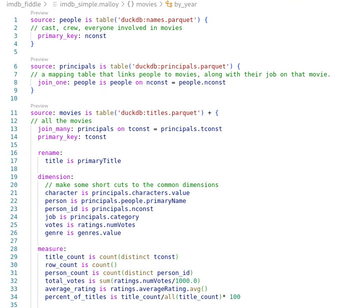
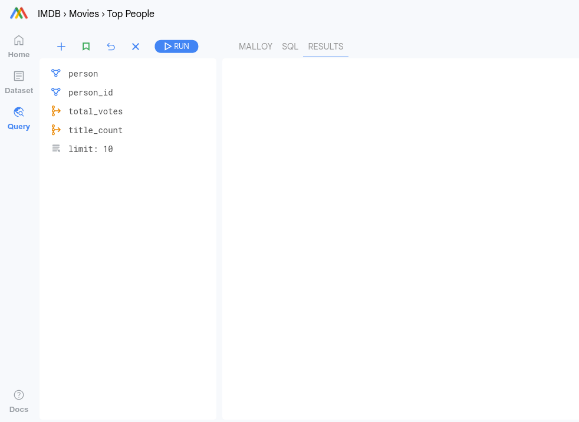
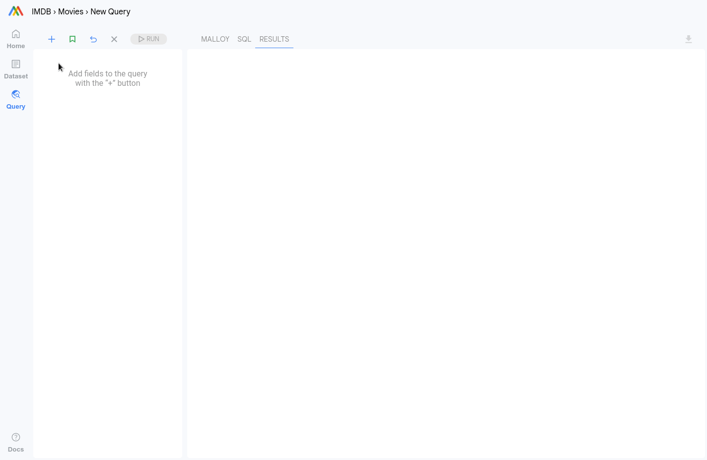
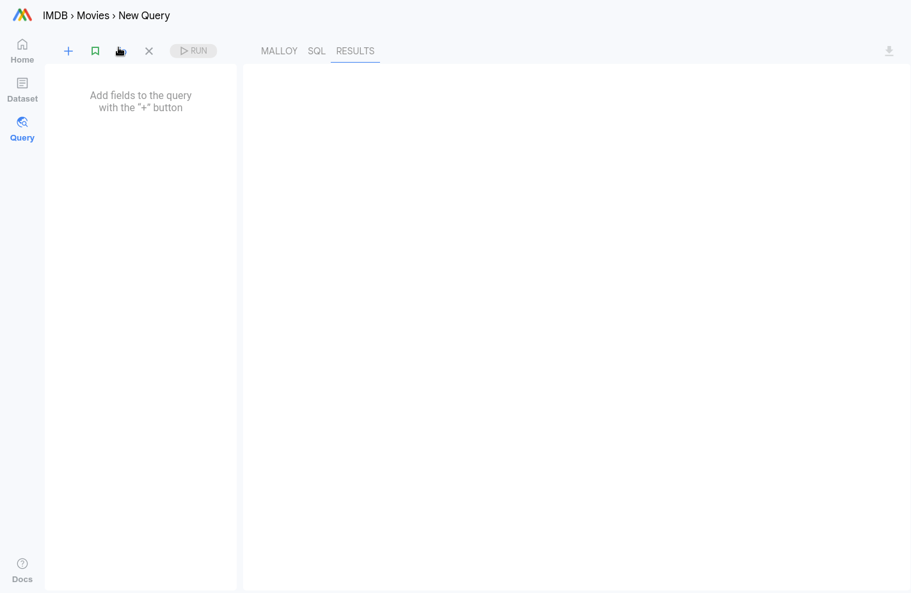
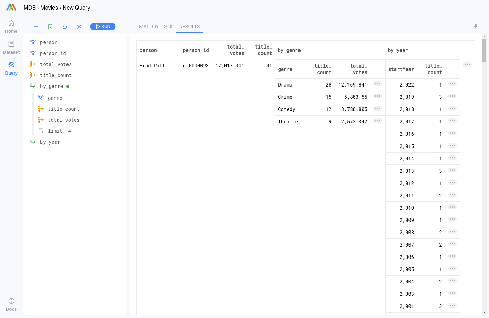
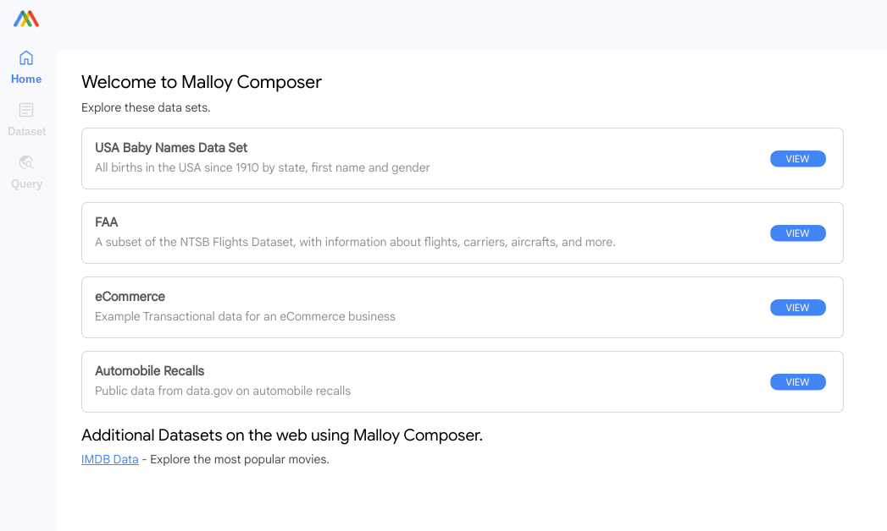

All Posts
All Posts
Malloy's semantic modeling and querying enables an exciting new way to explore data.
November 25, 2022 by lloyd tabb and Michael Toy
Experienced data explorers know how to move through complex datasets. They operate vehicles which are well designed to move efficiently through data landscapes. Malloy allows people who know how to drive, to suddenly find themselves flying.
While data is recorded or streamed in a two dimensional universe of columns and rows, it is comprehended in a hyper-dimensional network of contexts and vistas which Malloy is designed to discover and explore.
As someone who already understands how to gain insight from data, you need to map your knowledge about navigating through data to the vocabulary of Malloy. Like a plane moving down a runway before it takes off, that movement is a precursor to the Malloy moment when you escape the limitations of two dimensions and begin seeing data in an entirely new way.
Welcome to flight school, let’s get familiar with the controls. Please click the "Try it" links as we go along.
Motion begins with a query
Data tools build queries. You start with a table, pick a column to group the data, then compute a measure/metric about that grouping of the data, possibly sorting the result or limiting the number of rows returned.
A query is a useful entity. Adding or changing a filter on a query lets you move through data in different directions. The results of a query can be visualized to better understand what you are seeing at any point.
A collection of these query results on a surface makes a dashboard, and by connecting all the queries on a dashboard to a common filter you can move move through data and see how the landscape changes as you steer.
Semantic Data Models
A Semantic Data Model makes this process easier. With a semantic data model, you define data relationships (like joins of tables), dimensions and measures. In your data tool, these elements become available without having to redefine them. For example, if you create a measure for revenue. You can use revenue as a measure in any query you build.
Malloy extends the semantic model by adding a modeled query as an entity in the model, opening up new dimensions where knowledge is gained and shared.
Get in the cockpit, exploring the IMDb
We are going to use the IMDb (Internet Movie Database) as an example. The entities are movies, principals, people, crew, ratings and genres. Malloy lets us create a semantic data model in just a few lines of code. The important thing here is the dimensions and measures we declare will be the building blocks for our queries. The dimensions we most care about are title, character, person, job, votes and genre. The things we want to measure are title_count, person_count, total_votes.
It turns out total_votes is our best proxy for an interesting movie. It shows the public’s interest in a particular film but not necessarily the quality.
You can run any of the examples below by using our WASM based data explorer just click "Try It!"
The Semantic Model
The extract below shows our definitions for the measure and dimensions we are going to use in this example. The complete, 75 line model can be found on github.
Building Queries
Building queries in Malloy Composer will feel familiar. The components are all there: dimensions, measures, filters and sorts. Queries can be built into the semantic model or built as you explore. You can also load a pre-built query from the model, the example below shows how to do both.
query: top_people is { group_by: person, person_id aggregate: total_votes title_count limit: 10 }
Filtering Data
Malloy Composer can index all the dimensional values in the data set so you don’t have to think about how to create filters. Who played Batman, Dracula, or Lois Lane? Who are the top directors in comedy? Who was involved in The Shining? (just click any of those links). To add a filter, just start typing in the search box, and select the dimension with the most interesting value. Adding filters can teach you a bunch about a dataset.
Take Off - Composing with Queries
Here is where things get really interesting. We’ve seen building queries and naming them. Malloy allows you to use queries as building blocks in other queries, not just dimensions and measures. The magic here is nest. A query that is nested essentially uses the row that it is on as filters. Let’s start with our people query and then look at the genre and jobs for each person.
Drilling into detail
Once you see data this way, you will begin to notice interesting things, as you might as you fly over a city, and wonder what that is down below you. It turns out that finding these points of interest, isolating them with filters and then looking at the isolated data by some other query is one of the main tools in working with data.
Malloy Composer makes this very easy. Next to each row of data is a button with a .... Clicking the button sets are the relevant filters for the row, allowing you to load another query.
It sounds more complex than it is. In the example below we notice that Leonardo DiCaprio has done 6 Biographies. Clicking the ... sets the filters for every dimension on the row. We can then load the top_titles query and hit run.
Getting Deep with Nesting
Nest can be as deep as you would like. Let’s look at the IMdB again, the directors top 3 genres and the top 4 movies in each genre.
Nesting 'flat' is a dashboard
Nesting a more than one of query in the top query creates a dashboard. Any filter applied to this query will apply to all the queries. This operates like a traditional dashboard. Malloy’s single query approach to dashboarding is actually more efficient. Malloy reads the data from storage only once. We can look at an overall dashboard, movies with a Batman character and movies with Lois Lane character.
While a Malloy nested query is like a dashboard, giving a view of a slice of information, with control over the slicing, it is also more than that. It leverages the queries you write to create a whole new custom vehicle for exploring the data in any dimension you can imagine.
Style: Simplified Chart Rendering
In Composer, you can set the rendering style for a particular result and it will change how it is displayed. Complex results can be rendered as a table or dashboard, simple query results can be rendered as various chart types.
Curation: Show what is important
The data model above is a simplified version. We’ve created a more complete model. Malloy Composer allows you to curate a landing page for a dataset that has the most interesting and useful queries.

Create a landing page for a dataset things that are interesting or commonly sought after can be found easily.
More datasets, more features!
This is just a taste of what Malloy and Malloy Composer can do. Explore more datasets to learn more.
